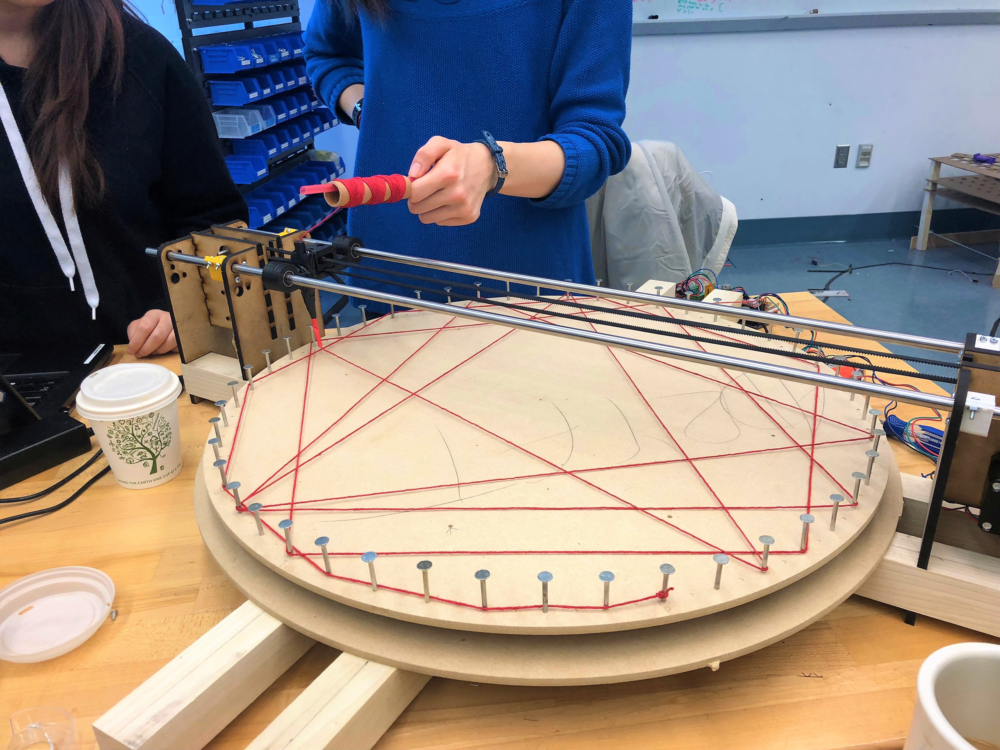
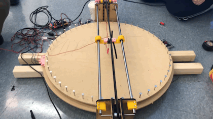
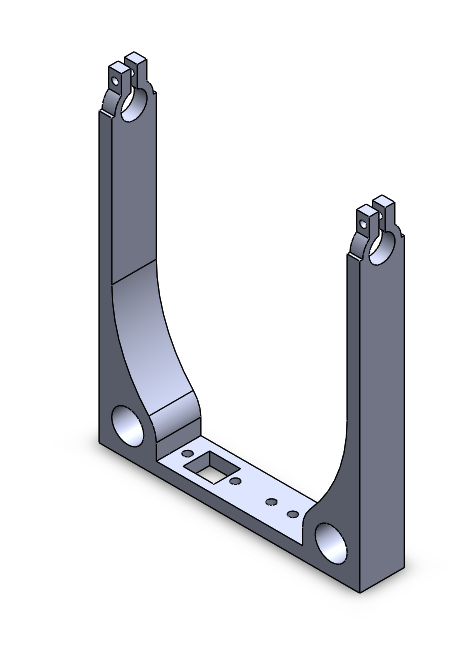
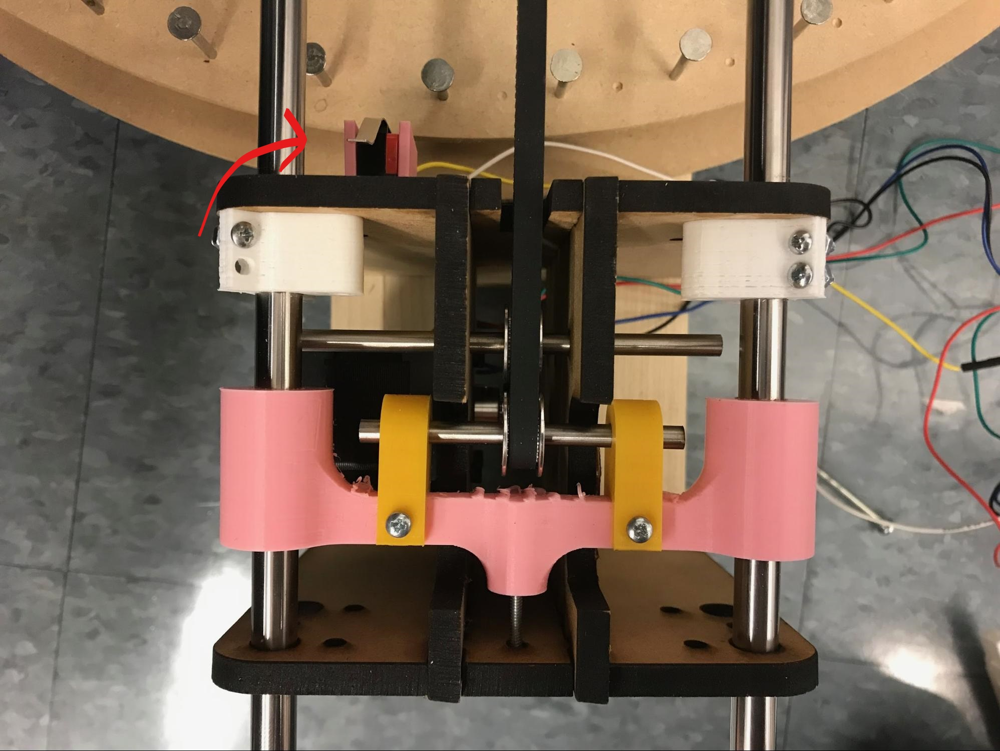
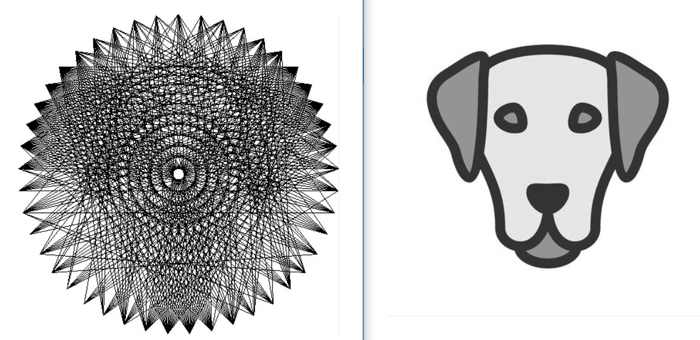
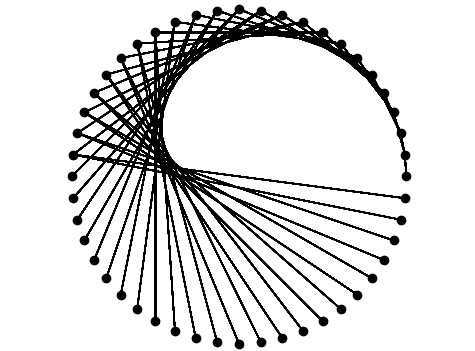
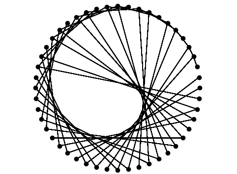
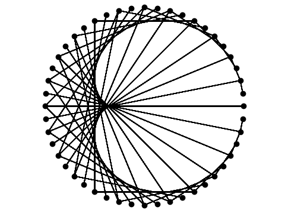
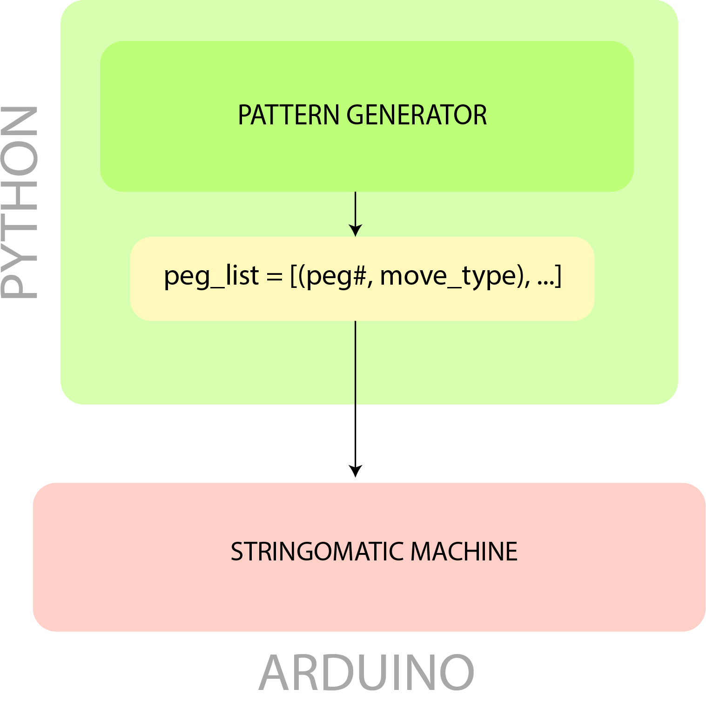

Team Adryft finished the last sprint with a rotating peg board, functional image-processing code, and working Arduino controls. Let's see what they accomplish this week...
Hardware
As a reminder, here's what we had at the end of Sprint 2.

Sprint 3 was focused on the refinement and finalization of some of the smaller components of the system. Notably, we developed mounting for the spool and integrated that into our carriage. We also developed mounts for different sensors that we want to integrate into the system, notably an infrared sensor for homing the theta axis, and a limit switch for homing the radius axis.
We first set out to add the string placement manipulator. Our idea was to have a nozzle attached to the r-axis manipulator that would have some give so that the nozzle would not get stuck while passing over previously placed string. This was implemented by making the nozzle tip out of shrink tube.
One problem we ran into was the nozzle had too much give and was unable to loop the string around pegs. We remedied this by redesigning the nozzle and using plastic tubing rather than a brittle 3d-printed piece.
This is the new nozzle in action!
In addition, also designed and implemented some additional brackets for the gantry. These brackets would keep the plates rigidly mounted to the poplar beams, as well as keep the plates completely parallel to each other. These were added because there were some minor inconsistencies in how the gantry was mounted to the rest of the frame. In general, they helped a lot to reduce slop in the system, and just made everything a lot more rigid and robust.

Next, we added a spool holder to the string manipulator.
Finally, we added homing to the r axis with a limit switch. We placed a switch at the base of the gantry.
Before drawing a pattern, the nozzle inches towards the base until it clicks the limit switch. This way, we consistently start in the same position every run.
Software
Our team discovered that it was hard to get good recognizeable pictures with a resolution of only 48 pegs on the peg board.
With just 48 pegs, it was difficult for the simulation to create a comprehensible picture of a simple dog.
Instead of creating images out of image files, we looked to create cool geometric art based on mathmatical equations. We were impressed with the results.
These designs were made with a sequence where the the string wrapped around peg number n x constant s starting from n = 0.
  Our team agreed that, not only did these patterns look better than the image-processed designs, but these patterns were a more suitable goal for our MVP. Plus, these designs didn't require 1000+ feet of string!
With this decision, we made two major changes to the structure of the code.
As a reminder, here's what our communication architecture looked like between the Python and Arduino Code.

First, as you might have noticed from the images created from the simulation, our pictures no longer require the pegs to be connected by string across the middle of the board. Instead, the machine can loop around the outside of the board to get to its next peg.
Secondly, the size of the peg-drawing data that the Arduino had to process was creatly decreased with these simpler geometric designs. Now, we no longer had to send the commands from Python to Arduino one at a time.
Now, a python program generates a geometric peg list with an additional property "move_type". The move_type specifies whether the nozzle moves around the outside of the pegs or across the peg board to wrap the string.
On the image-processing side of the project, we sought to address the weakness in our pathing algorithm for the string. Our original algorithm computed the line that would cover the most "darkness" in an image starting from the current position of the nozzle. We wrote another algorithm that computed the best line considering all possible start points on the peg board. Unfortunately, this new algorithm did not yield improved results on a peg board of only 48 pegs.

MVP achieved! Check out our Project Overview for the final product!